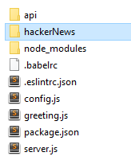

Authentication using JWT and Passport
This lab implements a JWT-based Authentication strategy on the Hacker News solution from the previous lab.
Introduction
This lab will create authentication with JSON Web Tokens for the hacker news solution in previous labs. You will include the jwt token with every request, meaning that we don’t need sessions. This way you don’t need cookies, but clients of the service will need to save the JWT in localStorage or other places on the frontend.
In this lab you will:
- create an /api/users route to register and acquire a token
- add authorisation middleware the api/posts route, making it only is available to users with a valid JSON web token
- update the HackerNews React app to use the API.
- add basic login/signin functionality to HackerNews app.
Set up
You will need the solution form last weeks lab(lab-node3) as a starting point. You can find a solution to the last lab here in /labs/lab-node3.
Install dependencies
You'll need the following dependencies to implement the authentication functionality:
npm install --save passport passport-jwt jsonwebtoken bcrypt-nodejsCreate Mongoose User Model
You will need to create a new user model for authentication.
- Create a new folder /api/users/ in the root project folder. In this folder, create a new file called userModel.js and enter the following code:
import mongoose from 'mongoose';
import bcrypt from 'bcrypt-nodejs';
const Schema = mongoose.Schema;
const UserSchema = new Schema({
username: {
type: String,
unique: true,
required: true,
},
password: {
type: String,
required: true,
},
});
UserSchema.pre('save', function(next) {
const user = this;
if (this.isModified('password') || this.isNew) {
bcrypt.genSalt(10, (err, salt)=> {
if (err) {
return next(err);
}
bcrypt.hash(user.password, salt, null, (err, hash)=> {
if (err) {
return next(err);
}
user.password = hash;
next();
});
});
} else {
return next();
}
});
UserSchema.statics.findByUserName = function(username) {
return this.findOne({ username: username});
};
UserSchema.methods.comparePassword = function(passw, cb) {
bcrypt.compare(passw, this.password, (err, isMatch) => {
if (err) {
return cb(err);
}
cb(null, isMatch);
});
};
module.exports = mongoose.model('User', UserSchema);This script defines the schema for a user. Note that it includes a pre-save hook that encrypts the password property before it is saved or updated. Also, the comparePassword() instance method can be used to authenticate users.
Seed database with User Data
For development and testing purposes it would be a good idea to seed the database with some user data.
- Create a new file called userData.js in the root foldes of the project and enter the following javascipt code:
import userModel from './api/users/userModel';
const users = [{
'username': 'user1',
'password': 'test1',
},
{
'username': 'user2',
'password': 'test2',
},
];
export default async function loadUsers() {
try {
await userModel.deleteMany();
new userModel(users[0]).save();
new userModel(users[1]).save();
console.info(`${users.length} users were successfully stored.`);
} catch (err) {
console.error(`failed to Load user Data: ${err}`);
}
}- Update the main script for the app, /index.js, to import userdata.js and run the loadUsers() function. Add the following lines of code to /index.js in the root folder.
...
import loadUsers from './userData';
...
// Populate DB with sample data
if (process.env.seedDb) {
loadContacts();
loadPosts();
// ADD THE NEXT LINE :)
loadUsers();
}- Open a terminal window in the root folder and start the app by entering
npm start. Comfirm that the users are being loaded by checking that you see the following console output:
[nodemon] starting `babel-node index.js`
body-parser deprecated undefined extended: provide extended option index.js:82:30
Server running at 8080
2 users were successfully stored.
4 contacts were successfully stored.
4 posts were successfully stored.User API
You will now create the routes for logging in (authentication) and registering new users.
Get Users
- In /api/users/ create a new file called index.js. Add the following code to the file:
import express from 'express';
import User from './userModel';
import asyncHandler from 'express-async-handler';
const router = express.Router(); // eslint-disable-line
// Get all users
router.get('/', asyncHandler(async (req, res) => {
const users = await User.find();
res.status(200).json(users);
}));
export default router;- Now add the following two lines of code to the /index.js in the root folder to include this router in the Express app.
...
import usersRouter from './api/users';
...
app.use('/api/users', usersRouter);
...- Using Postman (or in a browser), make a HTTP GET request for http://localhost:8080/api/users. You should get the following:
[{"_id":"5ad4a415d868c95db7089568",
"username":"user1",
"password":"$2a$10$Yr2RaZZys7/ot/cfKQOmHOgiJdC53FOYfb7m6dzA5yXMh8wvUwuDq","__v":0},
{"_id":"5ad4a415d868c95db7089569",
"username":"user2",
"password":"$2a$10$0WvCY4f5g9QBOPwzHqoIquSGMSAqX3uT5I82LQp.NwPkKGWKFJQcW",
"__v":0}]- Note how the passwords are being hashed before being saved in the database.
Register/Authenicate Users
You will use the POST on /api/users to both authenticate and register users. The 'action' parameter in the query string can be used to distinguish between login and signup/register. We will also need to specify a secret environment variable that will be used to create the Javascript Web Token.
- Add the following entry for the secret variable into the .env file
secret=ilikecake- Add the following import statement and route to /api/users/index.js.
import jwt from 'jsonwebtoken';
....
// Register/login a user, using async handler
router.post('/', asyncHandler(async (req, res) => {
if (!req.body.username || !req.body.password) {
res.json({
success: false,
msg: 'Please pass username and password.',
});
};
if (req.query.action === 'register') {
const newUser = new User({
username: req.body.username,
password: req.body.password,
});
// save the user
await newUser.save();
res.status(201).json({
success: true,
msg: 'Successful created new user.',
});
} else {
const user = await User.findByUserName(req.body.username);
if (!user) return res.status(401).send({success: false, msg: 'Authentication failed. User not found.'});
user.comparePassword(req.body.password, (err, isMatch) => {
if (isMatch && !err) {
// if user is found and password is right create a token
const token = jwt.sign(user.username, process.env.secret);
// return the information including token as JSON
res.status(200).json({
success: true,
token: 'BEARER ' + token,
});
} else {
res.status(401).send({
success: false,
msg: 'Authentication failed. Wrong password.',
});
}
});
};
}));The above function checks for both username and password in the request. If the action parameter's value is "register", it attempts to create a new user in the database (using the mongoose User model). Otherwise, it authenticates the user, creates the JWT token using the secret and signed with the users username. The token is then returned to the client for use in future requests.
Tesing using Postman
Test that you can create and authenticate a user by trying the following tests in Postman:
- Get Users:Test that a HTTP GET for /api/users/ returns a collection of User documents with encypted passwords.

- Register a User:Test that a HTTP POST for /api/users/ with
action=regsteras a parameter Adds a new User document with an encypted password. Remember to include a User JSON document in the HTTP request body.

- Authenticate a User:Test that a HTTP POST for /api/users/ authenticates a User. Again, remember to include a User JSON document in the HTTP request body.

In this case, the API will return the JWT token in the response body.
- Unknown User/Password: Try to authenticate with an unkown user. You should see the follwing response:

Add Passport Authentication
Passport strategies are a middleware functions that a requests runs through before getting to the actual route. You will now create a JWT strategy and add it to the /api/posts route.
- in the root folder create a new folder called auth.
- Create a new file called /auth/index.js with the following contents:
import passport from 'passport';
import passportJWT from 'passport-jwt';
import UserModel from './../api/users/userModel';
import dotenv from 'dotenv';
dotenv.config();
const JWTStrategy = passportJWT.Strategy;
const ExtractJWT = passportJWT.ExtractJwt;
let jwtOptions = {};
jwtOptions.jwtFromRequest = ExtractJWT.fromAuthHeaderAsBearerToken();
jwtOptions.secretOrKey = process.env.secret;
const strategy = new JWTStrategy(jwtOptions, async function(payload, next) {
// usually this would be a database call:
const user = await UserModel.findByUserName(payload);
if (user) {
next(null, user);
} else {
next(null, false);
}
});
passport.use(strategy);
export default passport;The above script extracts the user from the token in the request (the payload) and verifys it is a valid username. The user id is then passed on to the next middleware, accessable through the request object.
Update the HackerNews posts API to use the user id by adding user field to the post schema and including it in the posts API:
- Replace PostSchema in /api/posts/postsModel.js with the following:
import mongoose from 'mongoose';
const Schema = mongoose.Schema;
const CommentSchema = new Schema({
body: {type: String, required: true},
user: {type: Schema.Types.ObjectId,ref:'User', required: true},
upvotes: {type: Number, default: 0},
});
const PostSchema = new Schema({
title: {type: String, required: true},
link: {type: String, optional: true},
user: {type: Schema.Types.ObjectId,ref:'User', required: true},
comments: [CommentSchema],
upvotes: {type: Number, min: 0, max: 100, default: 0},
created: {
type: Date,
default: Date.now,
}
});
export default mongoose.model('posts', PostSchema);- In /api/posts/index.js, replace the "Add a post" route with the following code to add the username payload extracted from the JWT token
...
// Add a post
router.post('/', asyncHandler(async (req, res) => {
const newPost = req.body;
newPost.user = req.userId || 'anonymous';
if (newPost) {
const post = await Post.create(newPost);
return res.status(201).send({post});
} else {
return handleError(res, err);
}
}));
...You need to import the jwt configured passport object into the main app script, /index.js.
- Open /index.js and make the following changes to add authentication to the /api/posts/ route:
// import passport configured with JWT strategy
import passport from './auth';
…
// initialise passport
app.use(passport.initialize());
…
// Add passport.authenticate(..) to middleware stack for protected routes
app.use('/api/posts', passport.authenticate('jwt', {session: false}), postsRouter);Test the Hacker News API
Now test that access to the /api/posts rquites JWT token.
- As before, autenicate a known user in the database. This time, copy the JWT Token returned from the API:
- Try to access /api/posts without including the token - it will return a status 401 - unauthorised.

- Now, in Postman, add a
authorizationheader to the request and paste in the JWT token copied in the previous step. You should now see all existing posts returned.

Hooking up the React App.
We will now connect your Hacker News React App to the API. This step requires completion of the React labs.
System Architecture
We will keep using the create-react-app framework you were using previously. create-react-app provides a mechanism for working with an API server in development. We can have the development server proxy requests intended for our API server as follows:

The React app makes an API request to localhost:3000, the Webpack development server. The development server proxies that request to the API server. This will remove any Cross-Origin-Resource-Sharing (CORS) issues with the browser. For this to work we need to launch both the create-react-app dev server and the API server in order to run the app locally. We also need to get the react dev server to proxy requests to the Express API.
- Copy the complete hackerNews app from it's current location and put it in the root of your Express API (node-lab2). To speed things up, you could delete the node-modules folder before copying and then do a
npm installin the now location. It should look like this when complete:

- Open a console window in the hackerNews folder and start the react app:
npm startCheck that the app functions as before. If it's not working then check the error messages if any.
Set up
Nodemon filter
We want the nodemon process to ignore any changes in the hackerNews folder as these will not affect the API. In the package.json file in the lab-Node2 root folder, update the scripts property to the following:
"scripts": {
"start": "nodemon --ignore hackerNews/* --exec babel-node index.js"
}Proxy Server
To have the React development server proxy our API requests to our Express API server, we need to add the following to the package.json file in the hackerNews folder.
"proxy":"http://localhost:8080",This should forward any request for unknown resources though to our Express app listening on port 8080.
Axios
We will need to make http requests to the Express API from the React App. In the hackerNews folder, install axois.
npm install --save axiosAxios is a promise-based HTTP client for the browser and node.js. You will use it to make requests to the Express API.
Start both servers
You will need to now start both the react app server and the Express API at the same time. Open two separate command windowsin the hackerNews folder and the parent lab folder. Start the respective servers in both windows:
npm startYou should see both processes come to life. As before, they support 'hot code changes' so you should not have to restart the processes as you moake changes.
Integrate the Express Hacker News API
Currently the Hacker News app uses a stubAPI to mimic a real API. We will now replace this with functionality that integrates with our API. We also need to manage JWT tokens in local storage in the browser.
- In the hackerNews/src folder create a file called auth.js with the following content:
class Auth {
/**
* Authenticate a user. Save a token string in Local Storage
*
* @param {string} token
*/
static authenticateUser(token) {
localStorage.setItem('token', token);
}
/**
* Check if a user is authenticated - check if a token is saved in Local Storage
*
* @returns {boolean}
*/
static isUserAuthenticated() {
return localStorage.getItem('token') !== null;
}
/**
* Deauthenticate a user. Remove a token from Local Storage.
*
*/
static deauthenticateUser() {
localStorage.removeItem('token');
/**
* Get a token value.
*
* @returns {string}
*/
static getToken() {
return localStorage.getItem('token');
}
}
export default Auth;- Create a new script in the hackerNews/src folder called api.js and enter the following code:
import axios from 'axios';
import auth from './auth';
export const upvote = async (postId) => {
axios.post(`/api/posts/${postId}/upvote`)
.then(resp => resp.data);
};
export const getAll = async () => {
const resp = await axios.get('/api/posts',{headers: {'Authorization': auth.getToken()}},)
return resp.data;
};
export const getPost = async (postId) => {
const resp = await axios.get(`/api/posts/${postId}`,{headers: {'Authorization': auth.getToken()}})
return resp.data;
};
export const add = async (newTitle, newLink) => {
const resp = await axios.post('/api/posts',{title: newTitle, link: newLink }, {headers: {'Authorization': auth.getToken()}});
return resp.data;
};
export const login = async (username, password) => {
const resp = await axios.post('/api/users', { username: username, password: password });
return resp.data;
};
export const signup = async (username, password) => {
const resp = await axios.post('/api/users?action=register', { username: username, password: password });
return resp.data;
};Notice how the routes match what is implemented in the Express API and what was tested using postman. The proxy property in the HackerNews package.json provides the host information required to complete the request(i.e. localhast:8080).
- In the
hackerNews/src, editApp.jsas follows: Add and import statement for the new api package.
import * as api from './api';- We are going to place the posts returned from the Express API in the HackerApp component state. We will only show the NewsList component if we sucessfully retrieve all posts from the API. We include an isHidden property to indicate this.
In App.js, us the function
componentDidMount()of the App component to get the posts from the Express API:
...
async componentDidMount () {
try{
const resp = await api.getAll();
this.setState({
posts: resp,
isHidden: false,
});
} catch (e){
this.setState({
isHidden: true
});
}
};
...
...- Now replace the
renderfunction of the HackerApp component with the following code. This replaces the previous use of stubAPI with the new posts state retrieved from the api package.
render() {
const posts = _.sortBy(this.state.posts, post =>
post.upvotes);
return (
<div>
{!this.state.isHidden && <NewsList posts={posts}
upvoteHandler={this.incrementUpvote} />}
<Form addHandler={this.addPost} />
</div>
);
}Now have a look at the app in the browser. You should see the list of news items as before. This time, however, they are retrieved from the Express API. Try to add a new post. You'll notice nothing happens. Next we will update the addPost() method.
Adding a post
- Locate the
addPostfunction in the HackerApp component. Replace it with the following:
...
addPost = async (title, link) => {
try{
const resp = await api.add(title, link);
const newPost = {"id":resp.id,"title":title,"link":link,"upvotes":0, "comments":[]};
this.setState({posts: this.state.posts.concat([newPost])});
} catch(e){
alert(`failed to add post: ${e}`);
}
};
...This function calls the Express API using async/await. When the await returns, then it pushes the new post onto the posts state property. The HackerApp should react to this state and call the render function again.
Check the app in the browser again. You should be able add posts to the list.
Upvoting a Post
The upvote will cause errors if you try to use it at the moment. Replace the incrementUpvote function in the ReactApp component with the following:
incrementUpvote = async (id) => {
try{
await api.upvote(id)
var upvotedPost = _.find(this.state.posts, post=>post.id === id);
upvotedPost.upvotes++;
this.setState({})} catch(e){
alert(`failed to upvote post ${id}: ${e}`);
}
};Nowstart the application. You will probably notice you get a proxy message failure message as the react app tries to start.
roxy error: Could not proxy request /api/posts from localhost:3000 to http://localhost:8080.
See https://nodejs.org/api/errors.html#errors_common_system_errors for more information (ECONNREFUSED).This is because the react app (the client) has not retrieved a valid Javascript Web Token to use the HackerNews Express API. In the next part, we will include a Login page to allow user authentication.
Create a Login/Signin page
Finally, lets create a basic React component that can manage User registration and Authentication from your Hacker News App.
- In /hackerNews/src/components folder, create a new folder called loginPage and add a file index.js with the following contents:
import React, { Component } from "react";
import * as api from '../../api';
import Auth from '../../auth';
import { Redirect } from 'react-router'
class Login extends Component {
constructor(props) {
super(props);
this.state = {
username: "",
password: "",
confirmpassword: "",
authenticated:false,
action: "Log In"
};
}
handleChange = event => {
this.setState({
[event.target.id]: event.target.value
});
}
handleSubmit = event => {
event.preventDefault();
}
signupWasClickedCallback = async (event) => {
try {
if (this.state.password !== this.state.comfirmpassword){ Error('Passwords do not match!');
alert('Passwords Must Match');
console.log("failed")
}
else{
const result = await api.signup(this.state.username, this.state.password);
this.setState({ authenticated: true })
}
// this.context.router.push('/')
} catch (e) {
alert(`Registration Failed ${e}`)
event.preventDefault();
}
};
submitForm = event => {
console.log("submit")
event.preventDefault()
}
loginWasClickedCallback = async (event) => {
try {
const result = await api.login(this.state.username, this.state.password);
Auth.authenticateUser(result.token);
this.setState({ authenticated: true })
} catch (e) {
alert(`Authentication Failed: ${e}`)
event.preventDefault();
}
};
switchView = event => {
this.setState({ action: event.target.value })
event.preventDefault()
}
render() {
const { from } = this.props.location.state || '/';
const { authenticated } = this.state;
return (
<div className="col-md-4 col-md-offset-3">
<h2 className="card-title mb-4 mt-1">{this.state.action}</h2>
<form onSubmit={this.submitForm}>
<div className="form-group">
<label>Your username</label>
<input id="username" name="" className="form-control" placeholder="username" onChange={this.handleChange} />
</div>
<div className="form-group">
<label>Your password</label>
<input id="password" className="form-control" placeholder="******" type="password" onChange={this.handleChange}/>
{this.state.action==="Register" && <div><label>Confirm password</label><input id="comfirmpassword" className="form-control" placeholder="******" type="password" onChange={this.handleChange}/></div>}
</div>
<div className="form-group">
{this.state.action==="Log In" && <button type="submit" className="btn btn-primary btn-block" onClick={this.loginWasClickedCallback}> Log In </button>}
{this.state.action==="Register" && <button type="submit" className="btn btn-primary btn-block" onClick={this.signupWasClickedCallback}> Register </button>}
<div style={{float: 'left',paddingTop:10}}>
{this.state.action==="Log In" && <button type="submit" onClick={this.switchView} className="btn btn-secondary" value="Register">Register</button>}
{this.state.action==="Register" && <button type="submit" onClick={this.switchView} className="btn btn-secondary" value="Log In">Log In</button>}
</div>
<div style={{float: 'right',paddingTop:10}}>
<button type="button" className="btn btn-secondary" >Forgot?</button>
</div>
</div>
</form>
{authenticated && (<Redirect to={from || '/'}/>)}
</div>
);
}
}
export default Login;Again we import the api.js script to interact with the users api. We also use the auth.js script to manage local storage of the JWT token.
Add the loginPage to HackerNews App
We will now update the HackerNews app such that, if the user has not authenticated, we will present a link (in the form of a button) to the loginpage.
- Open hackernews/src/index.js and add a new route for the login page.
import LoginPage from './components/loginPage';
...
<Switch>
<Route path='/posts/:post_id' component={ CommentPage } />
<Route path='/login' component={LoginPage} />
<Route exact path='/' component={ HackerApp } />
<Redirect from='*' to='/' />
</Switch>- Locate the render function in the HackerApp component and replce with the following so that the button is only visible if authentication fails.:
render() {
const posts = _.sortBy(this.state.posts, post =>
post.upvotes);
return (
<div className="container">
<div className="row">
<div className="col-md-9 col-md-offset-1">
{this.state.isHidden && <Link to={'/login' }><button type="button" class="btn btn-primary">Log In</button></Link>}
{!this.state.isHidden && <NewsList posts={posts} upvoteHandler={this.incrementUpvote} />}
</div>
</div>
<div className="row">
<div className="col-md-9 col-md-offset-1">
<Form handleAdd={ this.addNewsItem } />
</div>
</div>
</div>
);
}NOTE: Your render funtion might be different to the above. The main objective is to locate the NewsList component and replace it with the two statements that display/hide the login button and the NewsList component.
- Now Test the HackerNews app. If not logged in you should see the following:
- Click on the "login/signin" button. This should display the Login page:
Authenicate using username: user1, password: test1. This should return you to the main page and the list of news posts.

Congratulations! You've included JWT in your app.
Challenge
Review your progress so far. Use the same approach to accomplish the following:
- integrate the API with the comment page.
- Update the ContactList app to use the API developed in this lab.